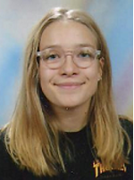
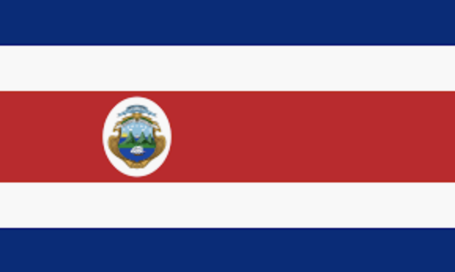
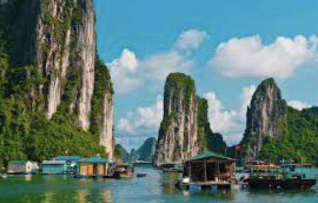
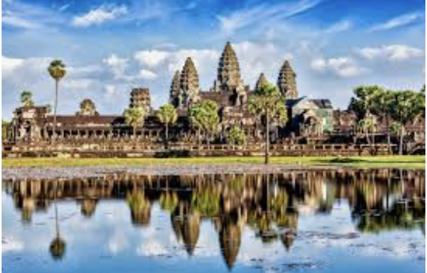
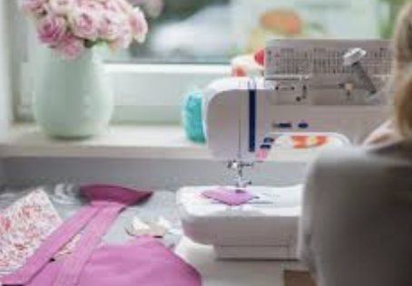
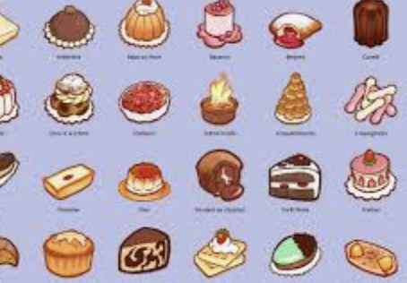

PRÉSENTATION RAPIDE
Bonjour, je m'appelle Maud Bluteau, je suis en 1ère année d'école de management à l'EMLV. Je suis une personne motivée, à l'écoute et dynamique

INFORMATIONS
- Maud Bluteau
- Née le 6 décembre 2002
- 7, bd de la libération 94300 Vincennes
- Identifiant Défense : 2394050216
- Tel : +33.6.40.28.62.07
- Mail : maud0612@sfr.fr
ÉTUDES
- Étudiante en 1ere année à l'EMLV
- Baccalauréat Série S mention assez bien en 2020, option Art Plastique - LV : Anglais & Allemand
- Formation BAFA en 2020
- Permis bateau en 2020
- PSCI - Formation Premier Secours en 2018
- Attestation scolaire de sécurité routière niveaux 1 & 2 en 2015 et 2017
EXPÉRIENCES PROFESSIONNELLES
- Réalisation d'un stage de troisème chez NOISE, Agence de communication éditoriale & création graphique à Paris 9
- Babysitting réguliers
ACTIVITÉS
CENTRE D'INTÉRÊT
Les voyages
- Costa rica en voyage équitable 
- Asie : Vietnam, Laos, Cambodge 
- Afrique : Madagascar, Maroc, Tunisie, Tanganie
Les loisirs créatifs
- Couture 
- Pâtisserie 